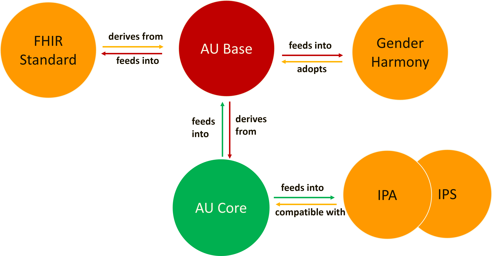

AU Base Implementation Guide
6.0.1-ci-build - CI Build

AU Base Implementation Guide
6.0.1-ci-build - CI Build

This page is part of the Australian Base IG (v5.0.1-ci-build: QA Preview) based on FHIR (HL7® FHIR® Standard) R4. The current version which supersedes this version is the current version. For a full list of available versions, see the Directory of published versions
| Page standards status: Informative |
AU Base is designed to serve as a base layer within the broader context of FHIR implementations in an Australian healthcare environment. AU Base is definitional in nature and not intended for standalone implementation. It provides an additional set of localised options in addition to what is available in the FHIR standard including Australian extensions and Australian terminology. AU Base provides a source of truth for nationally agreed Australian concepts in FHIR such as Medicare card number or Australian Indigenous Status.
Australian realm IGs and implementers are expected to use an AU Base defined concept where one exists instead of redefining locally.
In summary, AU Base:
The context of AU Base within the set of HL7 AU standards is shown in the figure below:
This layering of IGs balances relative adoption and implementation maturity of FHIR and requirements of the use cases involved.

Figure 1: Context of AU Base within the set of HL7 AU standards
AU Base aligns to, and leverages, international standards and other national standards. Corresponding profiles and extensions included in relevant FHIR implementation guides were reviewed and considered during the development process to ensure alignment and facilitate adoption of this standard. These implementation guides include:
The relationship of AU Base to other implementation guides is shown in the figure below. For illustrative purposes one downstream IG (AU Core) is shown.

Figure 2: Relationship to Other IGs
| Implementation Guide | Relationship |
|---|---|
| HL7 Cross Paradigm Implementation Guide: Gender Harmony - Sex and Gender Representation | This IG provides definitive guidance on how to exchange clinical sex and gender affirming information using HL7 models. Sex and gender concepts from this IG have been reviewed for the potential for adoption in Australia. Where adopted, these concepts are included by reference in AU Base and are available for use in AU Core via inheritance from AU Base. |
| AU Core | This IG defines a set of conformance requirements that enforce a set of 'minimum requirements' on the local concepts from AU Base, specifying the elements, extensions, vocabularies, and value sets that SHALL be present and how they SHALL be used. AU Core also defines a data access API, specifying the conformance requirements for RESTful interactions. |
| AU Provider Directory | This IG defines a set of conformance requirements for the purpose of implementation of provider directory services. AU Provider Directory uses AU Base as the basis for profiles that define the FHIR resources to be supported, and rules for the elements, extensions, vocabularies, and value sets and the RESTful API interactions. |
| International Patient Access 1.1.0 | This IG describes how an application acting on behalf of a patient can access information about the patient from a clinical records system using a FHIR based API. The profiles in this IG were reviewed and considered during development of AU Base and AU Core, e.g. AU Core conformant data can be accessed by an IPA conformant client. |
| International Patient Summary 2.0.0 | This IG describes how to represent in HL7 FHIR the International Patient Summary (IPS). An International Patient Summary (IPS) document is an electronic health record extract containing essential healthcare information about a subject of care. The profiles in this IG were reviewed and considered during development of AU Base and AU Core. AU Base and AU Core are designed to be compatible with the data requirements of IPS, e.g. AU Core conformant data can be used to generate a patient summary that is conformant to IPS. |
IG © 2017+ HL7 Australia. Package hl7.fhir.au.base#6.0.1-ci-build based on FHIR 4.0.1. Generated 2026-06-18
Links: Table of Contents |
QA Report
| Version History |
 |
Propose a change
|
Propose a change